Древняя культура Анд с сочными сладкими корнеплодами. По вкусу напоминает смесь груши, яблока и арбуза. Ценится за высокий урожай, необычный вкус и содержание инулина.
Преимущества культуры для вашего участка.
Каждый сорт уникален — от формы до вкуса.
Якон в разные сезоны: от всходов до сбора урожая.
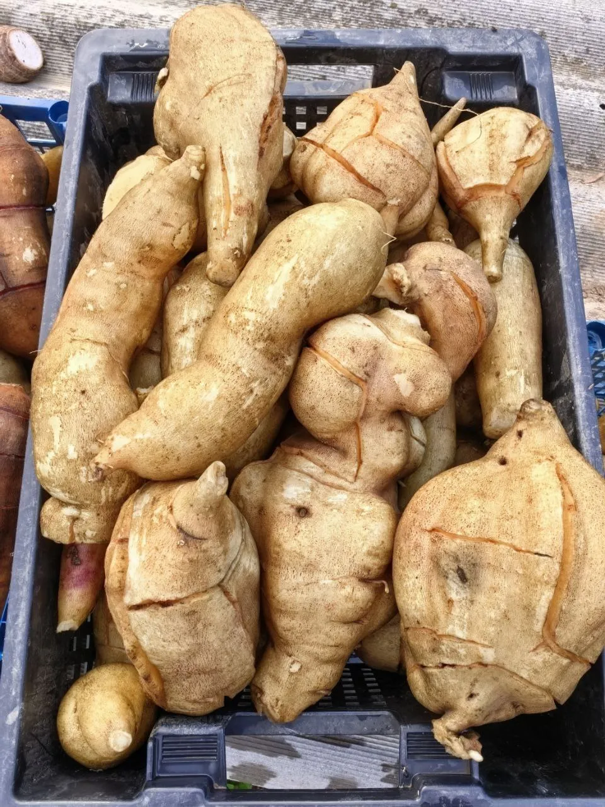
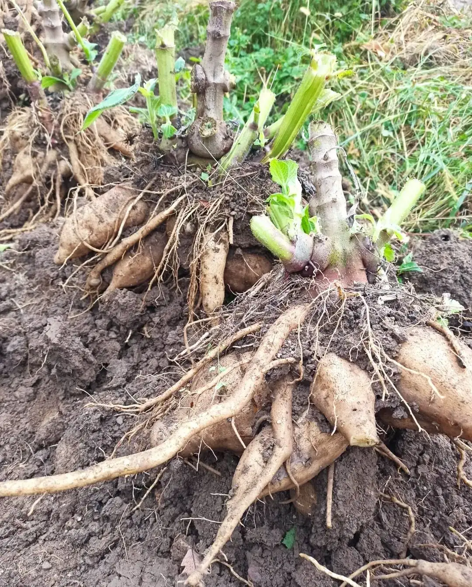
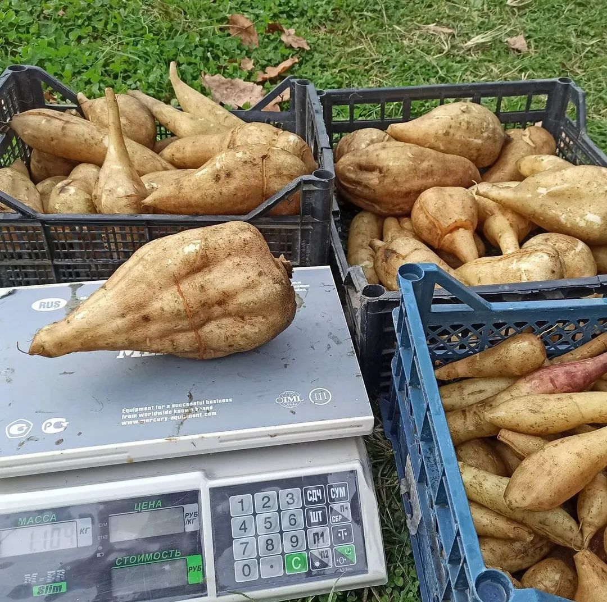
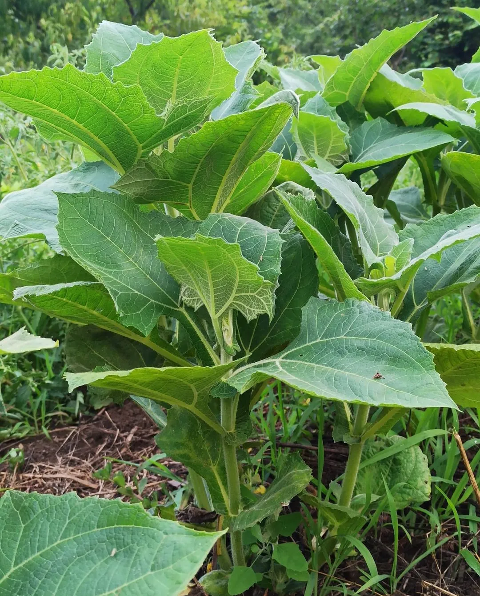
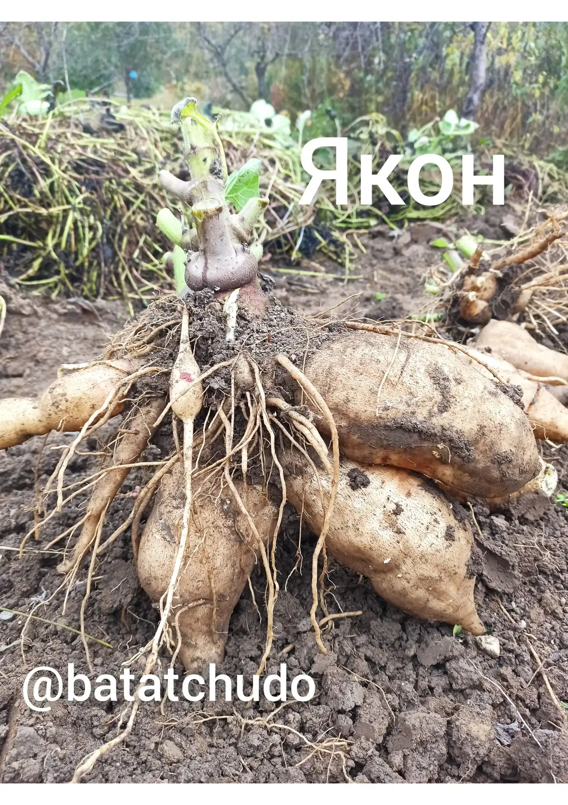
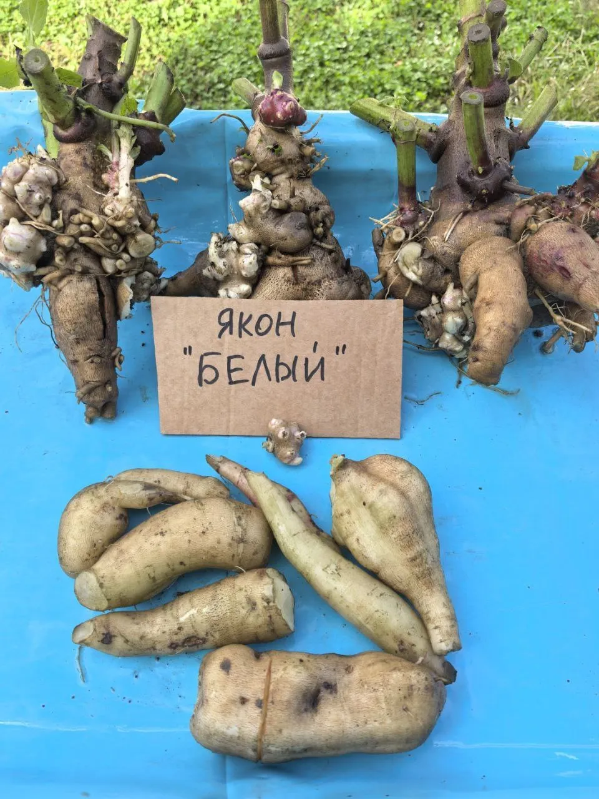
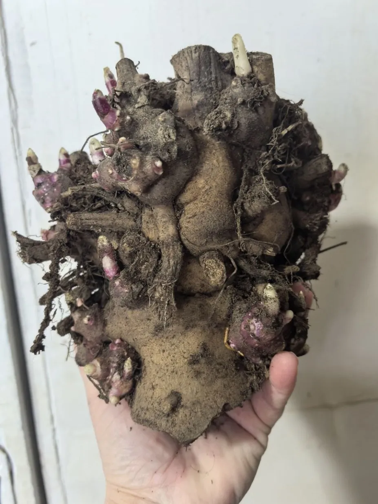
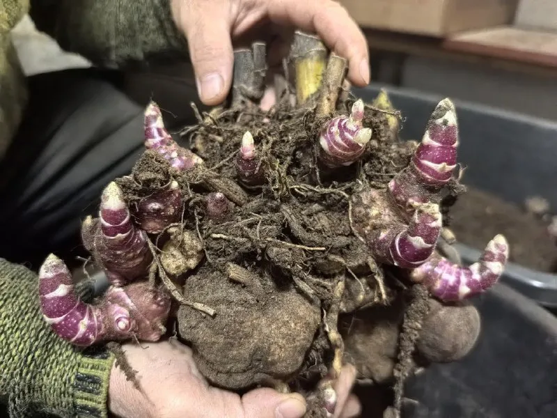
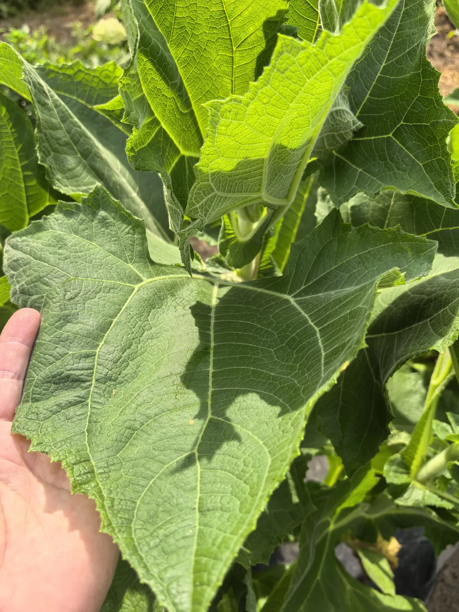
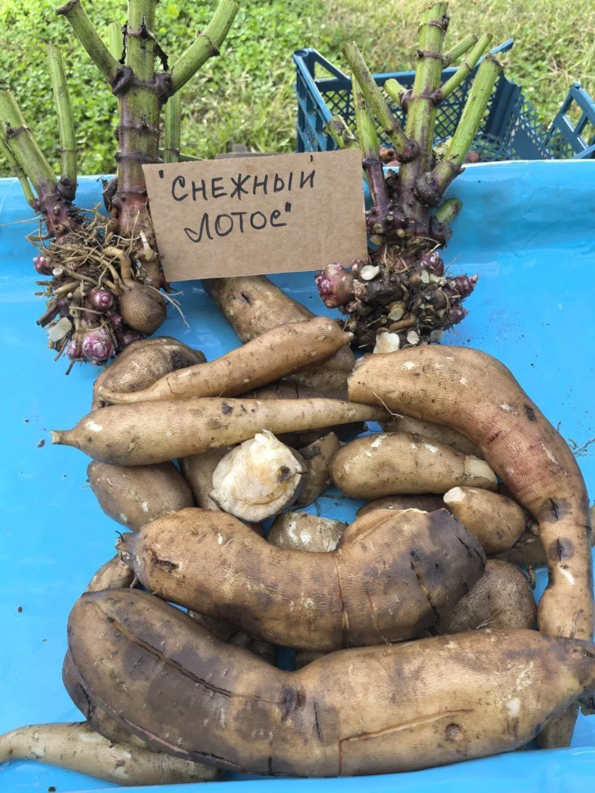
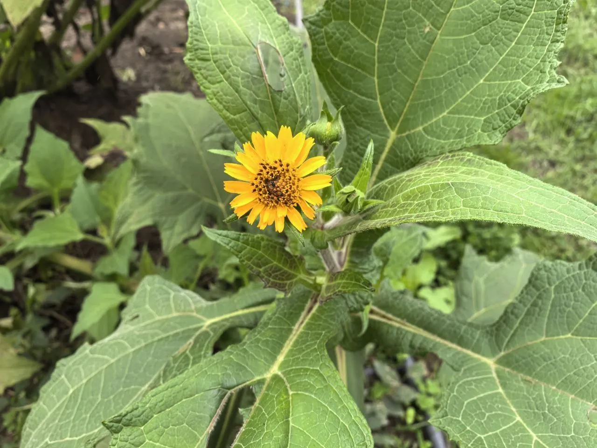
Всё, что нужно знать о культуре: от посадки до хранения.
Якон — неприхотливое андское растение, которое ценится за сладкие, сочные и хрустящие клубни. При правильном подходе его можно успешно выращивать в самых разных климатических условиях.
Якон — «калиелюбивая» культура. Избыток азота снижает урожай корней.
Якон размножают корневищами (не семенами и не клубнями). На корневище образуются почки (от 5 до 50 шт), из одной почки вырастает одно растение.
Да, именно в сыром виде якон наиболее вкусен. Его сочная хрустящая мякоть напоминает смесь груши и яблока. Достаточно просто вымыть и нарезать.
Да! Якон содержит фруктоолигосахариды (ФОС) и инулин, которые не повышают уровень сахара в крови. Это один из немногих сладких корнеплодов, разрешённых при диабете.
Убирают якон в конце октября до первых заморозков. Корни хрупкие — выкапывайте аккуратно. Хранятся клубни несколько месяцев в прохладном месте при +5…+10°C.
Да, через рассаду. Корневища проращивают в горшках с марта, высаживают в открытый грунт после заморозков. Растение успевает дать отличный урожай за наше лето.
Начните с сорта «Якон Белый» — он самый неприхотливый, стабильно урожайный и имеет классический сладкий вкус без сюрпризов.
Посадочный материал из коллекции Batatchudo и рекомендации по выращиванию.